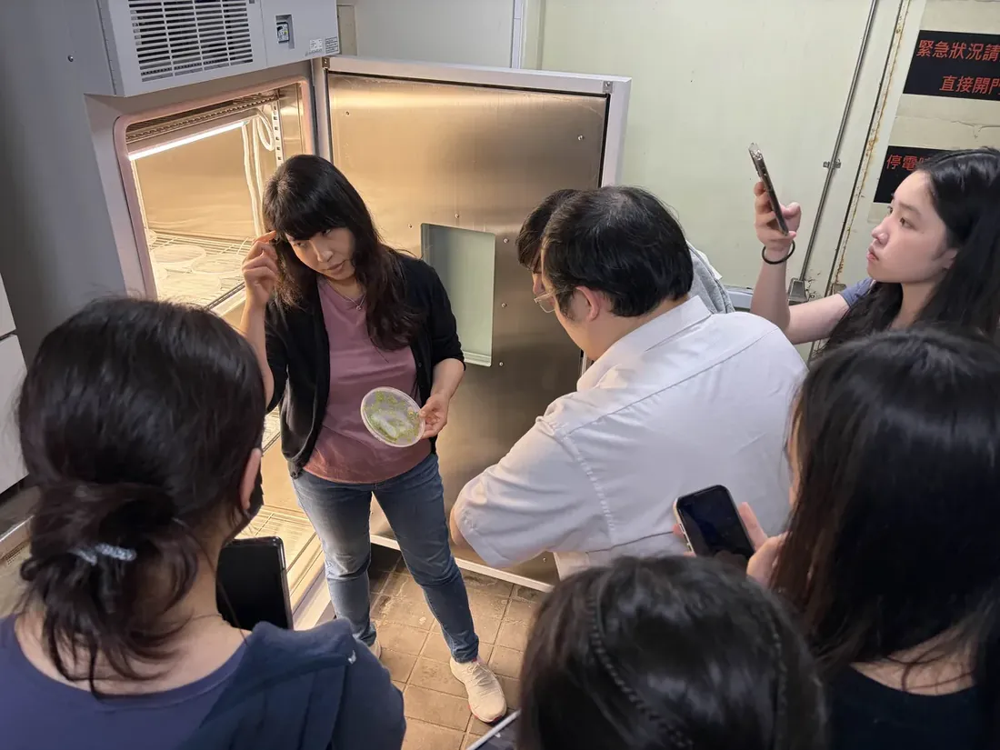
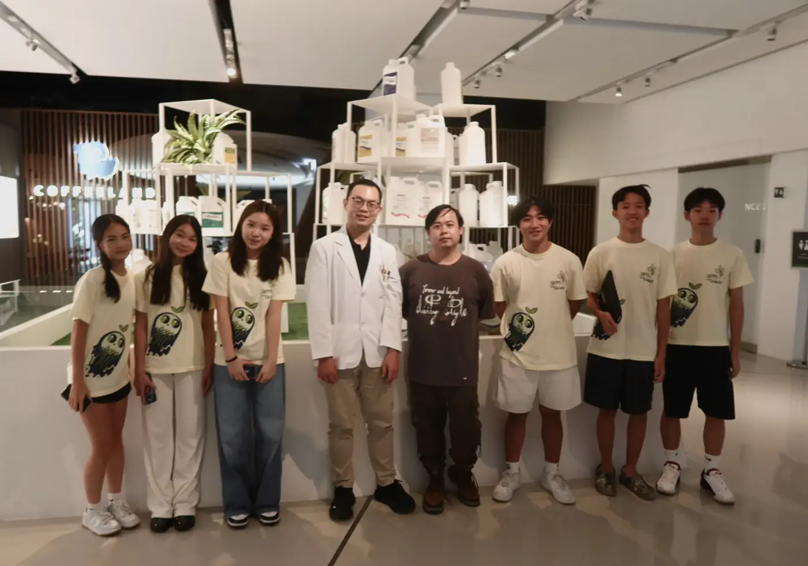
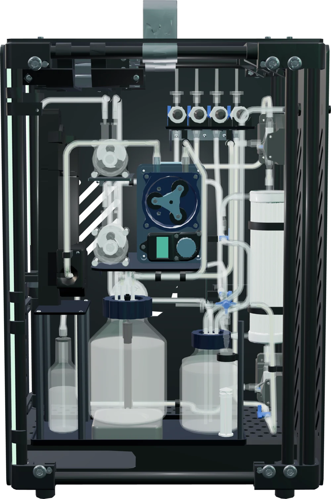

What a working ReLEAF has to do, in five stages with one criterion each, and what the evidence says it reached.
Every stage carries a test that settles it, and every figure below belongs to the page that owns the experiment. Of twenty-two criteria, eighteen are met. The sensing chain is characterized and a growth forecast registered thirteen days ahead landed inside its interval. The reactor holds 3.4 to 6.5 µg/mL of ACC deaminase (ACCD) by anti-His ELISA, and the secreted enzyme turns its substrate over, the DNPH assay peaking at 30.9 nmol α-ketobutyrate mL⁻¹ h⁻¹ eighteen hours into a reactor run. Containment holds on all four of its rows: nothing grows from the shell side, no fiber is blocked, no run has leaked since the first. OD600, pH, pressure and flow all read in line while a run is going. In the plant screen the agar set clears its 20% threshold 8.7-fold. Three criteria are partly met — activation, light control of production, and replication in the plant screen — and dissolved oxygen was never measured.
What does success for the entire system look like?
ReLEAF protects plants on demand by making the protectant where it is needed, so no component can be judged alone. Stress has to be detected, the engineered bacteria have to make the intended protectant and stay contained, the reactor has to be held at conditions that can be read while it runs, and the plant has to benefit. That is a chain of five stages, and a break in any one of them stops the rest from counting.
1. Detect, Forecast & Activate
Identify when the plant is under stress, forecast stress that is coming, and convert that into the light response
Start
A basic sensor setup and a bare LED holder, with no quantitative threshold
AIoT Sensor System + LPA
2. Produce
Produce the intended type and amount of protectant using engineered B. subtilis
Start
A circuit design on paper, untested
Genetic circuit
3. Contain
Keep the engineered bacteria inside the bioreactor and out of the output stream
Start
An initial reactor design, untested
Hollow-fiber membrane + bioreactor
4. Monitor
Track the conditions the culture is held at while a run is in progress
Start
Hand sampling, read offline on a cuvette spectrophotometer
Photometer + reactor sensors
5. Protect
Produce a measurable improvement in plant performance under stress
Start
A stress response observed by eye, with no measured rescue
Agar + hydroponics + soil
Each stage began somewhere, and each carries one quantified criterion, so it can be shown to be met or not.
The five stages, what success requires of each and the test that settles it
Stage
What success requires
What settles it
Detect, Forecast & Activate
Stress is read where the plant is, forecast before it arrives, and turned into the light signal that starts production
Sensors characterized against a reference, a forecast registered before the run that scores it, and production triggered from that signal
Produce
Engineered B. subtilis makes the intended protectant, in an amount we can state, under green-light control
A Western blot for identity, an anti-His ELISA for how much, and a DNPH assay for whether the secreted enzyme works
Contain
The cells stay in the lumen for the length of a run, and nothing viable leaves with the product
No growth from the shell-side stream while the lumen plate grows, and a membrane that stays intact under the pressures we run at
Monitor
The conditions the culture is held at are readable without opening the loop
In-line OD600 agreeing with a reference spectrophotometer, and pH, pressure and flow logged reproducibly through a run
Protect
A treated plant does measurably better than an untreated one under the same stress
Chlorophyll and root length against the stressed control, at least 20% better, under salinity and under heat
Two LEDs per column driven straight off a breadboard, green to turn production on and red to turn it off. It proved the switching principle and nothing more: nominally identical LEDs put out different amounts of light, and the cultures still saw the room.
Turning points
A 4 × 6 array brought six light conditions with four replicates each. Measuring all forty LEDs showed that grouping them by output could not make distinct intensity levels, so intensity moved into software by pulse-width modulation and an enclosure went round the array. An overnight run on a shaker then snapped a support post and leaked light between neighboring wells, which bought four bottom-plate screws, reinforced solder joints and a black tube holder with thicker walls.
Where it stands
LPA holds six fixed light conditions with four replicate cultures each and has carried a full culture experiment: B. subtilis WB800 with the CcaS/CcaR circuit under red and green at 100%, read by anti-His ELISA at 12.9 against 11.8 µg/mL at 13 h. Our light is measured in lux, which is weighted for human vision and cannot set equal photon doses for green and red, so photon flux and the LEDs’ actual wavelengths are the next measurements.
Prototype 1 followed Tocquin et al. (2003): an opaque black box, a floating Styrofoam board, black tape and microcentrifuge tube lids. Contamination set the limit at once, and the next two prototypes, a commercial box and then a transparent one, germinated three seedlings and then one.
Turning points
Five prototypes in, the hand-cut board was replaced by a 3D-printed board with uniform holes, the medium was changed more often and the solution aerated to raise oxygen at the roots. Growth steadied, and the work moved from keeping plants alive to running experiments on them. Before our own protectants could go on the racks the carrier had to be bounded: B. subtilis TB medium was applied at six dilutions, and every one of them — down to 1/16, the weakest tested — left the plants stressed, with anthocyanin accumulating even in the mildest groups.
Where it stands
The system runs timing experiments. Under 100 mM NaCl, co-treatment with CH peptide gave the highest fresh weight, 0.2029 g against 0.0862 g in the control, and kept most of its leaves green through seven days of salt. Professor Cheng, who showed us hydroponic growing in March, has adopted the revised design for her own graduate students.
Arabidopsis thaliana on agar, as the most controlled of our three platforms: two days of stratification, then four-day-old seedlings onto stress plates. Germination was inconsistent and contamination frequent, and seed sterilization with transfers inside the biosafety cabinet was what cleared it.
Turning points
Counting how many seedlings grew was not sensitive enough, so the plates went vertical and root length became the readout. A ladder at 75, 100 and 150 mM NaCl then set the working stress: mean primary root fell from 74.95 mm with no added salt to 34.77, 11.00 and 1.36 mm, which puts the usable window at 75 to 100 mM. Delivery moved from pipetting and spraying, which floats seedlings off the agar and leaves droplets on leaves, to transferring seedlings onto treated plates, so the dose is set by the medium.
Where it stands
The screen carries a calibrated salt ladder, a dose that works and a timing answer for each stress. Under 100 mM NaCl, 5 mM trehalose raised chlorophyll 8.7-fold with about 3 cm more primary root, at p < 0.0001. Two sets, BoPEP4 and AtLEA14, are planted, photographed and charted and not yet written up, so no conclusion is drawn from them here.
Trays of Arabidopsis grown in soil beside the agar and hydroponic work, closest to the conditions ReLEAF would meet in a field. Watering and mold made the first four trays hard to read, and some of the earlier plants had already begun flowering, which rules them out for experiments on vegetative growth.
Turning points
Soil makes the relation between salt added and stress experienced indirect, so it was treated as a separate stress model rather than a place to carry agar concentrations over to. Two published ways of setting soil salinity went in side by side on 6 September: the top-down wash produced visible growth inhibition, a fresh weight of 0.15 g, about 64% below the control, where sub-irrigation produced almost none, because plain water between doses flushed the ions out of the active root zone. The wash carried the trials.
Where it stands
ACC deaminase went on at three timings under a wash rising to 300 mM NaCl on 12 September, and under 37 °C heat on 22 September with five days of stress and five of recovery. Post-treatment holds the most green rosettes of the three timings; the pots have not been scored, so that reading is by eye.
A hollow-fiber membrane cartridge holds the cells in the lumen while smaller molecules pass into a separate collection stream. The first cycle tested one question, whether a culture could be perfused continuously and stay contained, and failed on two counts: a leak at the pump head ended it early, and OD600 in the tubing disagreed with the reservoir, so the culture was not mixed.
Turning points
The second cycle brought tighter connections, magnetic stirring and a sampling point at the reservoir outlet, and ran a complete growth curve without leakage. Shell-side medium plated on LB agar grew nothing, the first evidence that the membrane retained the cells. Flow and pressure sensors went on next, then the in-line photometer and the pH probe. Dissolved oxygen was attempted and the probe could not be calibrated.
Where it stands
Six runs, the longest 102.4 hours of uninterrupted monitoring. The reactor pumps, stirs and reports its own OD600, pH, flow and pressure, and anti-His ELISA puts ACC deaminase in it at 3.4 to 6.5 µg/mL from the first hour through 41 hours of operation. That settles how much protein the reactor holds. Output does not climb over a run, and raising it is the next job.
Drawing a sample to read OD600 interrupts the culture, so the reading had to come from the flowing loop. The first prototype put the optical path horizontal on an adjustable rail, where bubbles collected in the flow cuvette and crossed the beam, and the adjustable components drifted out of alignment.
Turning points
Turning the path vertical sent bubbles up and away from the beam. Tilting the whole optical channel by 10° cleared almost all of them within about a quarter of a second and cut the difference from the BioDrop reference from roughly 20% to 8%. The fourth iteration locked every component in a fixed position and enclosed the light path, and the measurement became ratiometric: a beamsplitter sends part of the light to a reference sensor, so the reading depends far less on the LED.
Where it stands
The instrument runs in line behind a live dashboard, with a median-absolute-deviation filter and bubble checks that caught 97% of disturbed readings and rejected no clean ones. It has logged over 400 hours without a manual sample and caught a recirculation-pump failure that no scheduled check would have seen. Against the reference it reads one to one to OD600 2.5, slope 0.995. A fiber-optic build is two-thirds smaller and reads about 5.6 times low, so the larger instrument stays our design for the reactor.
Production was split into two levels so it could be validated step by step: Level 1, constitutive ACC deaminase under the Pveg promoter, and Level 2, the same enzyme under green-light control through the CcaS/CcaR two-component system. Assemblies were verified by PCR and sequencing and transformed into B. subtilis, which is not yet evidence of protein.
Turning points
The first Western blot found no ACCD in the samples tested, so expression and protein recovery were worked on instead of assumed. A later blot carried the His-tagged band, and the question then moved from detection to measurement: an anti-His ELISA read against a fitted standard curve for how much, and the DNPH assay for the α-ketobutyrate the reaction releases. The Berthelot route needed an ACC-compensated calibration before it could read ammonium through our culture matrix at all.
Where it stands
Level 1 has both a figure and a function: 3.4 to 6.5 µg/mL in the reactor across both October runs, and a DNPH time course over a v2t1 run that is at the floor for twelve hours, peaks at 30.9 nmol α-ketobutyrate mL⁻¹ h⁻¹ at 18 h and settles between 11 and 15 thereafter. Every point is one well, so the shape is a trend and the rate is not yet ours to quote. Level 2 is assembled, junction-verified in three clones and read by the same ELISA at 12.9 against 11.8 µg/mL under green and red at 13 h; two samples a side leaves light control still to demonstrate.
In March the question was what to test. The project carried several stresses, Medicago, hydroponics and several ways of reading a plant. Dr. Lin pressed us on real plant applicability and on the choice of target species, and Prof. Cheng offered the more controllable path we took: Arabidopsis grown on agar at an early stage.
Turning points
Dr. Verslues moved us from supplying protection after stress to using bacterial products to influence the plant’s own response earlier. Prof. Chen’s framing of the hardware as a printer and the biofertilizer as its ink, with Dr. Brophy’s case that physical containment rather than a kill switch should be the primary mechanism, produced the contained membrane reactor. Dr. Sattely sent us back to validate the protectant before integrating it.
Where it stands
The recent consultations are about rigour. Prof. Huang: protein quantity means little without identity, solubility and function together. Prof. Cheng: the experimental conditions themselves create stress and have to be standardized. Our September meeting with Dr. Sattely and Prof. Endy set the agenda this page reports against — separate the engineered bacteria from the protectant, demonstrate production and secretion, strengthen the controls, and state what each experiment proves.


ReLEAF validation
We return to the question we started with: does ReLEAF work as a complete system?
The final ReLEAF system
The components are no longer judged one at a time. What follows asks whether they form a continuous chain, from reading stress through to a plant that is measurably better off, and says on what evidence each link holds.

Criteria validation
One table per stage, each row a criterion, the evidence that answers it, and the verdict that evidence supports. The source is named in every cell and links to the page that owns the experiment.
Detect, Forecast & Activate: each criterion, the evidence and the verdict
Criterion
Evidence and source
Verdict
Build the stress-detection chain and establish what its readings are worth
Leaf and air sensors were read side by side at three sites on 10 October, 540 paired readings. The air sensor matched the nominal temperature everywhere and the leaf sensor’s own offset came out at +1.2 to +1.9 °C once settled, which is the correction the software needs before it reads canopy stress. Inside the reactor the autoencoder separates a sensor fault from a change in the culture, flagging a failing photometer 26.7 h early at a 6.1% false-alarm rate. The leaf-wetness channel read 0.0% across all 540 samples, because the sensor was never wetted. Digital Twin
Met
Forecast a condition before it happens, and be scored on it
A growth forecast was registered 13 days before the run that tested it, then scored against it: r = 0.286 ± 0.010 h⁻¹ inside the registered 0.2705 to 0.3300 interval, R² 0.978. On the 102-hour run four forecasting models beat the persistence baseline out to 12 h ahead. The weather-service forecast is retrieved and drives the rice-blast wet-period rule, whose wet threshold is still a default. Digital Twin
Met
Activate the response from the signal
LPA does this part: it holds six light conditions on command and carried a full culture experiment through them. The step after it is not built. The green-light strip is not integrated into the bioreactor, and the forecast is not wired to the light decision, so no end-to-end stress-triggered trial exists for the ≥90% figure to score. LPA · Digital Twin
Partly met
Produce: each criterion, the evidence and the verdict, at both levels
Criterion
Evidence and source
Verdict
Level 1 · Constitutive production
Detect ACCD production
A Western blot carries the His-tagged ACC deaminase band in the constitutive expression vector, after an earlier blot on which the samples tested showed nothing. Results
Met
Quantify what the reactor makes
Anti-His ELISA against a fitted standard curve reads 3.4 to 6.5 µg/mL from the first hour through both October runs, to 30 and 41 h; the run corrected for pH automatically and the one corrected by hand came out indistinguishable, averaging 5.0 and 5.1 µg/mL. The concentration does not climb over a run. Results
Met
Demonstrate that the secreted enzyme is active
The DNPH assay follows α-ketobutyrate, the product of the ACC deaminase reaction, across a v2t1 constitutive reactor run sampled at seven points. Nothing turns over for the first twelve hours, and then activity jumps to 30.9 nmol α-ketobutyrate mL⁻¹ h⁻¹ at 18 h, the highest this assay has returned for reactor material, settling between 11 and 15 for the rest of the run. Every sample reads inside the validated range of the standard curve, which is linear to 2.049 mM at R² 0.9995. The ACC-compensated Berthelot calibration reads ammonium through our culture matrix as the second route to the same answer. The enzyme turns its substrate over. Each point is a single well, and the peak works out at 0.52 mU/mL against the 7.25 mU/mL an earlier permeate assay read over 30 minutes, a fourteenfold gap that the reaction lengths most likely explain, so activity is demonstrated and no rate is quotable yet. Measurement · Results
Met
Level 2 · Green-light-controlled production
Assemble and verify the CcaS/CcaR circuit
Three Level 2 clones amplified across all three internal junctions, every lane positive. Sequencing has not yet returned. Results · Parts
Met
Quantify expression under green light against controls
Anti-His ELISA against a fitted standard curve puts a figure on every light-plate culture, where the Western blot could only call the difference small: 12.9 against 11.8 µg/mL at 13 h and 12.5 against 12.1 µg/mL at 16 h, green over red both times. DNPH on the green-light tube, held at 3,850 lux, shows the protein made there is active at 0.5503 mM of α-ketobutyrate. The circuit’s output is now readable by assay. Results
Met
Show that green light controls production
Green sits above red at both time points, but with two samples a side and ranges that overlap, and with growth the same under both colours, the difference is too thinly replicated to call light control. No red-light culture has been assayed for activity either, so the comparison has not been carried through to a functional readout. Results
Partly met
Contain: each criterion, the evidence and the verdict
Criterion
Evidence and source
Verdict
Retain the engineered cells inside the reactor
Two plating experiments, both negative on the shell side: 2 mL of shell-side liquid plated on 6 June, and a lumen-against-shell pair drawn while the reactor was running and incubated 24 h at 37 °C, where the lumen plate grew and the shell plate carried no colonies. The mechanism is size exclusion: a 0.2 µm PES membrane against a rod of 1 to 2 µm. Each experiment was a single plating with no replicate and no recorded detection limit, so retention is demonstrated and not yet quantified as a log reduction. Results
Met
Keep the membrane intact at the pressures we run at
The 16 August series pumped water through the loop at eight pump speeds, once with the hollow-fiber module and once with a plain tube in its place. At our working flow of 263 mL/min the module loses 0.096 bar, 1.03 times the value the textbook formula predicts for eleven open fibers, so no fiber is blocked and none has opened up. Digital Twin · Bioreactor
Met
Hold containment for the length of a run
The pump-head leak that ended the 6 June cycle early is the only loss of containment on record. After the connections were rebuilt, no leakage was observed in any later test, through the 102.4-hour run of 1 to 6 September and the October runs to 30 and 41 h. The shell-side plating was taken during a run rather than repeated at the end of each one. Results · Bioreactor
Met
Catch an abnormality in the output stream before it grows
Four pressure transducers, the flow meter and the in-line photometer log continuously, and the twin computes transmembrane pressure and a fouling ratio from them. Its autoencoder, trained on the healthy first 120 hours of the 434-hour run, flagged the failing photometer 26.7 h before its reading gave out, and run 6 ran behind an acceptance gate that rejected 31 of 1,083 windows. The biological check on the output is still an offline plating. Digital Twin · Results
Met
Monitor: each criterion, the evidence and the verdict
Criterion
Evidence and source
Verdict
Measure bacterial concentration in line
Against the BioDrop reference the in-line photometer gives a regression slope of 0.995 up to OD600 2.5 on 1 µm silica, intercept −0.07, and a median paired difference of 3.8% on TiO₂, with no correction transform applied. Above OD600 2.5 it reads about 0.33 OD600 low, and the range has not yet been repeated on B. subtilis. Measurement · Photometer
Met
Read culture pH during a run, and hold it
An Arduino pH probe sits in the reservoir cap, where the culture grows, and is logged live beside OD600, flow and pressure with an alarm on it. Prototype 3 held the pH with KOH through a run, and the October run corrected automatically and the one corrected by hand returned indistinguishable ELISA averages, 5.0 and 5.1 µg/mL. No calibration of the probe against reference buffers is on record. Bioreactor · Digital Twin
Met
Read bioreactor pressure reproducibly
The first attempt, on 14 August, did not repeat. The 16 August series does: eight pump speeds, background loop and module arm, giving the 0.096 bar drop at 263 mL/min that the fiber calculation above rests on. Three transducers read the feed, retentate and permeate ports, and transmembrane pressure is computed from them. Measurement
Met
Read bioreactor flow rate
A Hall-effect flow meter logs continuously with the pressure channels. It was validated by reading the meter and catching the outflow by hand at the same time, which agree at R² = 0.995, and the wall shear computed from the pressure transducers and from the flow meter agrees to 2.8%, so each sensor checks the other. Measurement
Met
Read dissolved oxygen
The DO probe could not be calibrated and neither probe can be autoclaved, so dissolved oxygen is not fitted to the reactor and no measurement of it exists. No run has a DO record to report. Digital Twin
Not tested
Protect: each criterion, the evidence and the verdict
Criterion
Evidence and source
Verdict
Deliver a protectant at a dose that produces a measurable biological effect
The agar screen clears this. Under 100 mM NaCl, 1.0 mM trehalose raised total chlorophyll over the untreated stressed control at p < 0.05 and 5 mM did so at p < 0.0001; under 150 mM the rescue was dose-dependent, 5 mM at p < 0.01 and 10 mM at p < 0.0001. The dose is set by the medium and the spray volume, 1.67 mL over a 78.5 cm² plate. Our own protectants give the effect without the statistics yet: BoPEP4 at 1/40 carried every plant green through 100 mM NaCl with the highest fresh weight and chlorophyll of its set, and ACC deaminase at 1/80 or stronger held both above the controls under 37 °C heat. Plants
Met
Improve plant performance by at least 20% against the stressed control
Set 6 cleared the threshold by an order of magnitude: 5 mM trehalose under 100 mM NaCl gave an 8.7-fold rise in chlorophyll content and about 3 cm more primary root than its untreated control, at p < 0.0001. The same dose did nothing at 75 mM and was not enough at 150 mM, so the improvement holds at a stress level we can name rather than across the ladder. Plants
Met
Show that treatment timing changes the protective effect
It does, and by enough to design around. On agar at 75 mM NaCl pre-treatment gave the highest fresh weight, 0.164 g against 0.144 g for co-treatment; post-treatment led under 37 °C heat, 14% above the heat-stressed control, and in soil at 300 mM, 13% above its control; in hydroponics co-treatment grew best under 100 mM NaCl. Which timing wins therefore depends on the stress, and because each condition was a single plate, no operating window is fixed yet. Plants
Met
Reproduce the effect across independent experiments
Trehalose rescue recurs across three independent sets — set 4 at 1.0 mM, set 5 dose-dependent at 150 mM, set 6 at 100 mM — and post-treatment CH Bio peptide led in both scored trials of set 7. Our own protectants do not yet reach that bar: each condition is a single plate rather than an independent replicate, the two trials of set 3 ran in opposite directions, and the two ACC deaminase heat trials disagree on which timing leads. Plants
Partly met
Our failures were measurements, and each one set the next design. What stands at the end of them is a chain that holds stage by stage, with its open ends named and its next tests already written.